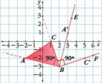
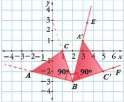

Rotación
Ejemplo
Lee los ejemplos: son la clave secreta para resolver sin miedo las actividades. 🔑📘
Rotar el △ABC alrededor del vértice B, 90° en el sentido de las manecillas del reloj.
- Primero, desde el punto de rotación B, se construyen, en el sentido de las manecillas del reloj, los ángulos ∠ABE y ∠CBF de 90° cada uno.
- Luego, con el compás se toman las medidas de los segmentos y y se marcan los puntos A' y C', y se marcan los puntos los puntos A' y C' en las semirrectas y para formar los segmentos y 
- Finalmente, se traza el segmento para obtener el ∆𝐴´𝐵´𝐶´ que corresponde a la imagen del ∆𝐴𝐵𝐶, después de ser rotado alrededor del vértice B, 90° en el sentido de las manecillas del reloj. 

Para verificar que la rotación realizada es correcta, se mide el ángulo que forma un lado de la figura inicial con el que corresponde al de la figura rotada. Además, se debe tener en cuenta que al rotar una figura no cambian ni las medidas de sus lados, ni las medidas de sus ángulos internos.
Conceptualización
Lee con atención
Una rotación es una transformación rígida en el plano que consiste en girar una figura alrededor de un punto.
- Para rotar una figura es necesario indicar tres elementos:
- El ángulo de giro que debe expresarse en grados.
- El sentido que puede ser en el sentido de las manecillas del reloj o en sentido contrario a las manecillas del reloj.
- El centro de rotación que corresponde al punto alrededor del cual se va a rotar la figura.
- El centro de rotación puede estar en el interior de la figura, en uno de sus vértices o en su exterior.

Actividades
La geometría es el arte de ver el orden en la apariencia caótica.
Efectúa la rotación que se indicade la siguiente figura:

Rota alrededor del vértice C el triángulo indicado 90° en el sentido de las manecillas del reloj.